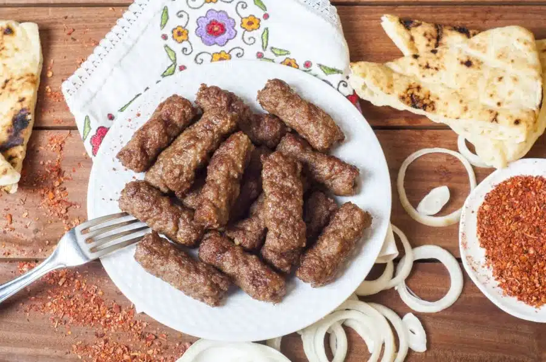

Balkan kebap

An Easy Kebapi Recipe To Make At Home
Kebapi is an old-fashioned dish that originates from almost unknown parts and is known as Ćevapičići. It is believed that ćevapi were introduced to balkan cuisine through the Ottoman Empire, which was present in the Balkan area for almost 500 years.
It is also said that the inspiration for ćevapi comes from oriental koftas, but the Bosnians have adjusted it to meet their preferences for flavor and texture. It’s all up for debate depending on where you live. In any case, these skinless sausages are delicious.
Ingredients
- 600 g finely minced beef (1.3 pounds)
- 300g finely minced lamb (or pork mince if you prefer) (10 oz)
- 3 cloves garlic, minced
- 1 teaspoon fine salt
- 1 teaspoon black pepper
To serve with
- Turkish-style Flatbread
- Chopped raw onions
Instructions
- In a large bowl, combine beef, lamb, and salt (plus other spices if you so desire)
- Knead the mixture with clean hands for 5 minutes
- Cover the meat with plastic wrap and refrigerate overnight
- Uncover the meat and stir in minced garlic and black pepper
- Shape the mixture into small logs no longer or wider than an index finger – it is best to do this with wet hands, so the meat does not stick to you. Keep wetting your hands after each few that you roll
- Preheat your grill. Ideally, you should use a charcoal grill
- Brush the grill with some olive oil
- Grill the minced fingers on a medium heat until evenly grilled and browned on all sides
- Serve warm with Turkish flatbread and freshly chopped onion (and ajvar if you have it!)
Enjoy!
Return to main page